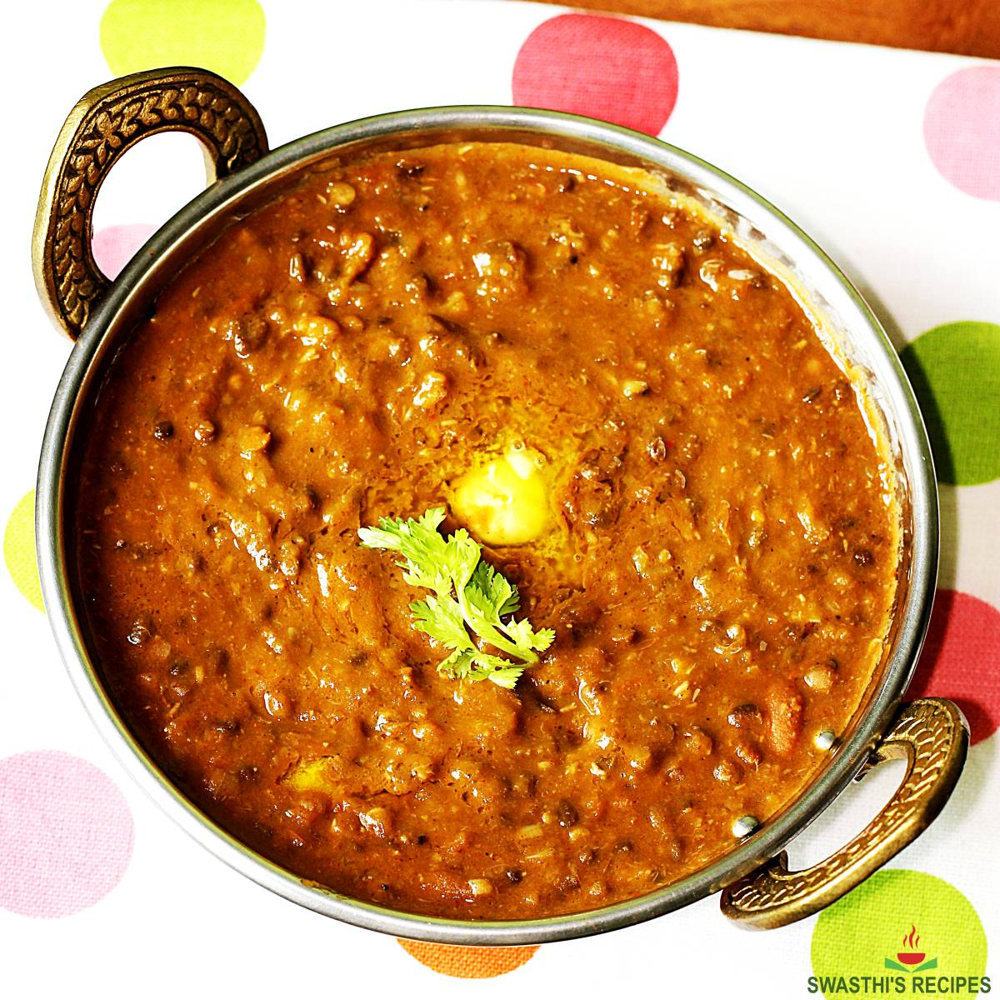

Ingredients:
- 1 cup black lentils (urad dal)
- 1/4 cup kidney beans (rajma)
- 1 large onion, finely chopped
- 2 tomatoes, finely chopped
- 1 green chili, slit
- 1 tablespoon ginger-garlic paste
- 2 tablespoons butter
- 1 tablespoon oil
- 1 teaspoon cumin seeds
- 1 teaspoon turmeric powder
- 1 teaspoon garam masala
- 1 teaspoon chili powder
- 1/2 cup cream
- Salt to taste
- Fresh coriander for garnish
Instructions:
- Soak the black lentils and kidney beans in water overnight.
- Drain and cook them in a pressure cooker with enough water until soft (about 4-5 whistles).
- Heat oil and butter in a large pan over medium heat. Add cumin seeds and let them splutter.
- Add onions and sauté until golden brown. Stir in ginger-garlic paste and green chili, cooking for a minute.
- Add tomatoes and cook until they break down and become a paste.
- Add turmeric powder, chili powder, and garam masala. Mix well.
- Add the cooked lentils and kidney beans to the tomato mixture. Stir to combine.
- Add water if needed to reach desired consistency. Simmer for 20-30 minutes on low heat, stirring occasionally.
- Stir in the cream and cook for an additional 5 minutes. Adjust salt to taste.
- Garnish with fresh coriander and serve hot with naan or rice.